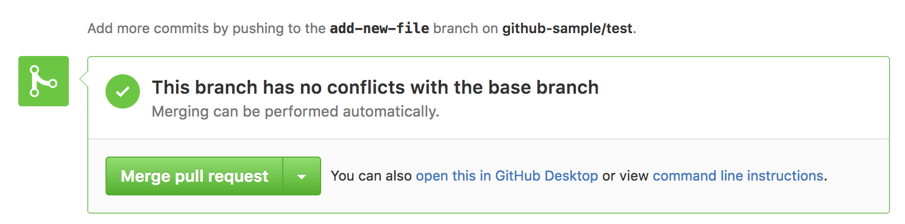
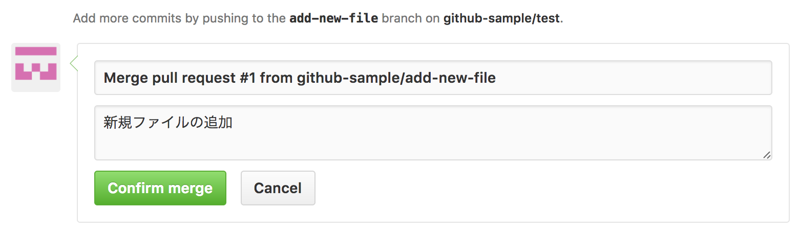
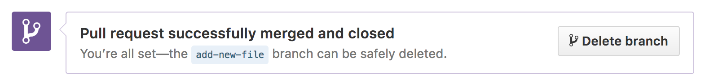

プルリクエストのコメントのやり取りが完了したら、プルリクエストを終了させます。「Merge pull request」をクリックしましょう。
マージする際のコメントを入力し、「Confirm merge」をクリックします。
今回は add-new-file ブランチから master ブランチへ向けてのプルリクエストだったので、 add-new-file ブランチが master ブランチにマージされた状態になります。
作業していたブランチが不要であれば「Delete branch」をクリックし、ブランチを削除します。
以上で、作業していた add-new-file ブランチも削除され、修正内容が master ブランチに反映された状態になります。